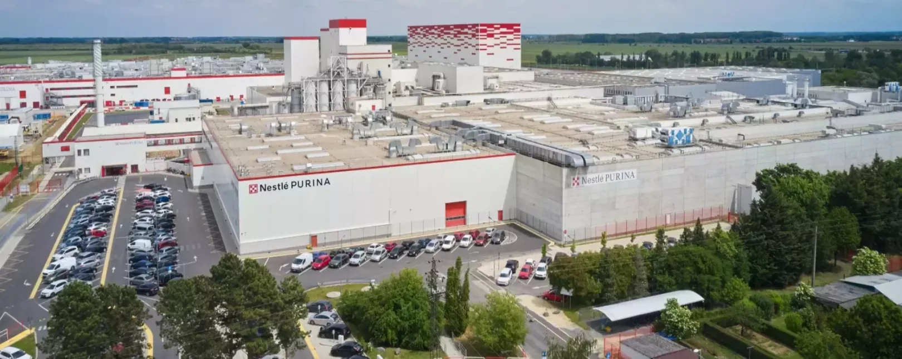
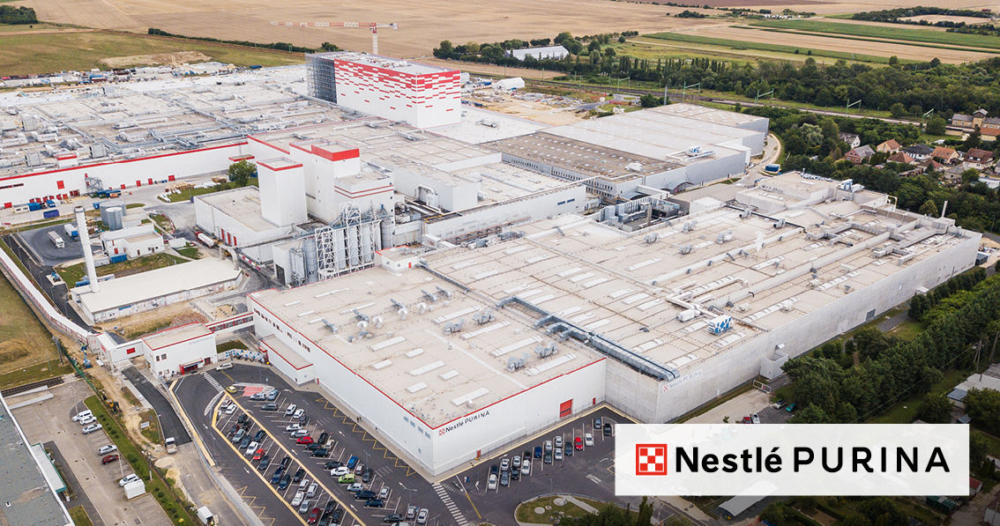

A Nestlé Purina büki gyára Magyarország egyik legjelentősebb állateledel-gyártó központja, amely Bük városában található. Az üzem a Nestlé nemzetközi vállalatcsoport része, és főként kutyák és macskák számára készült száraz állateledeleket állít elő, prémium minőségben. A büki gyár termékei számos európai országba jutnak el, így fontos szerepet tölt be a nemzetközi ellátási láncban is.

A gyár több, jól elkülöníthető üzemegységből áll. Ezek közül kiemelkedik a Turul 1 és a Turul 2, amelyek a gyártási folyamat központi elemei. A Turul egységekben történik az alapanyagok feldolgozása, az extrudálás, a szárítás és a késztermékek előállítása. A modern technológiának köszönhetően a gyártás hatékony, biztonságos és szigorú minőségellenőrzés mellett zajlik.
A büki Nestlé Purina gyár működésében nagy hangsúlyt kap a fenntarthatóság, a környezetvédelem és az energiahatékony megoldások alkalmazása. Emellett jelentős munkaadó a térségben, és aktívan részt vesz a helyi közösség támogatásában. A gyár célja, hogy hozzájáruljon a háziállatok egészséges, kiegyensúlyozott táplálásához, miközben hosszú távon is felelősen működik.